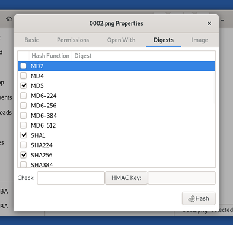

GtkHash allows you to calculate checksums. Checksums can be useful to verify the integrity of a file, for example, if you downloaded it from the Internet.
To calculate the checksum of a file:
Open the Files browser.
Navigate to the folder containing the file that you want to calculate the checksum for.
Right-click (on Mac, click with two fingers) on the file and choose .
In the dialog, click on the Digests tab.

In the Hash Function column of the Digests tabbed section, select the check boxes corresponding to the checksums that you want to calculate.
Click on the Hash button.
The calculated checksums appear in the Digest column.